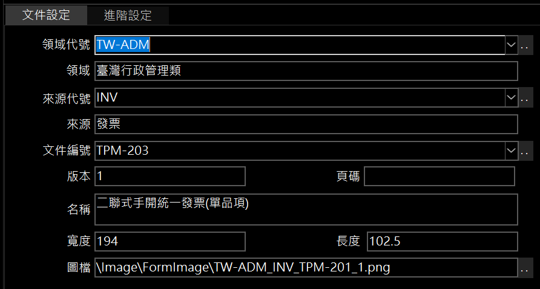
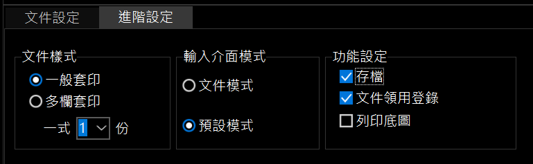
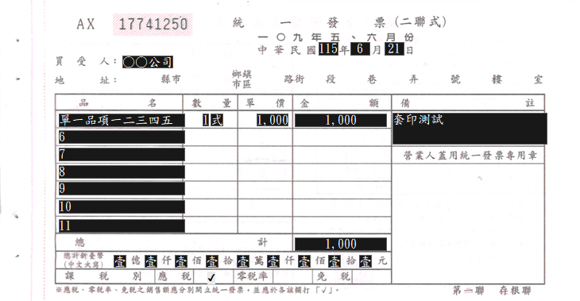
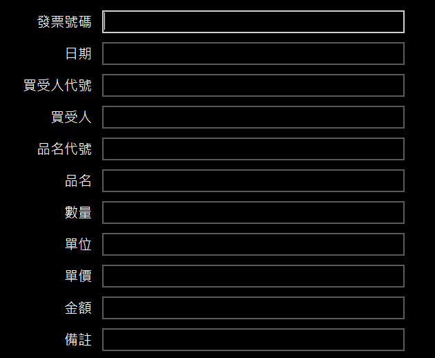
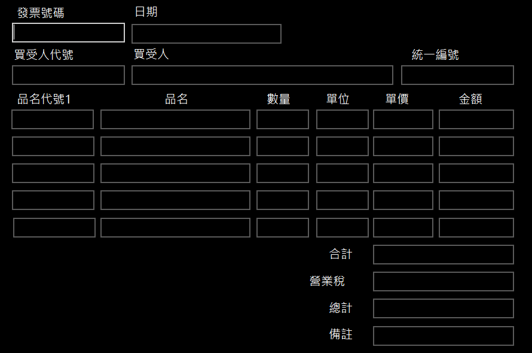

文件管理
文件管理可以新增、刪除並修改文件相關管理資料（不含文件紀錄的內容）。
 文件管理視窗
文件管理視窗
文件設定

文件設定工作頁
-
領域代號：
- 用於領域的分類管理（如金融業、運輸類、ISMS資訊安全）。
- 例：
TW-FIN 表示臺灣金融業。
-
來源代號：
-
文件編號：
- 依文源所提供文件進行命名或編碼，如支票、存取款條。
- 例：
01 代表支票。
-
開啟文件管理附屬資料：
-
 可開啟：
可開啟：
-
圖檔：
進階設定

進階設定工作頁
-
文件樣式：
- 一般套印：文件中只有一份紀錄，一般文件的預設模式。
- 多欄套印：相同內容一次列印多份（如標籤紙）。
- 一式1份：配合上述的文件樣式做設定。
-
輸入介面模式：
-
文件模式：輸入介面直接呈現文件畫面，提供類紙式的填寫方式。

文件模式
-
預設模式：沒有文件當底圖的輸入介面，當文件輸入的資料項目少於 20 個，由軟體自動生成輸入版面是最佳的做法；若超過 20 個輸入資料項目時，可以進行「輸入版面設計」進行設計輸入介面。

軟體自動生成輸入版面

人工設定輸入版面
-
功能設定：
-
存檔：將輸入的資料自動存成暫存檔，免除重複輸入。
-
文件領用登錄：需搭配下列 2 項功能設定。
- 文件紀錄儲存設計 指定文件哪些資料要存檔，存入資料庫中 InfoRec 資料表的指定欄位。
- 文件領用登錄 創建及檢查文件號碼與領用數量，做為文件紀錄存檔的依據及索引。
- 列印底圖：將文件與輸入的資料一併印出。